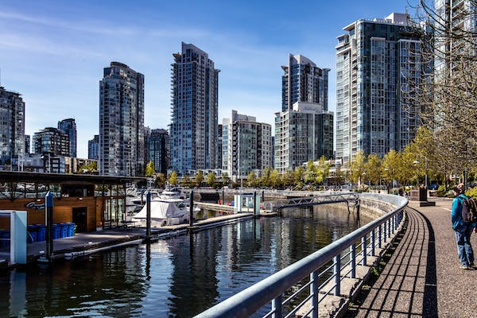
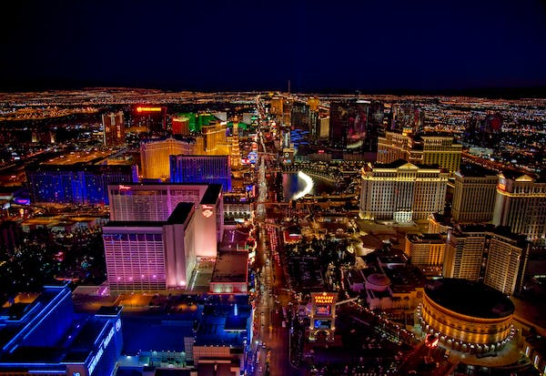
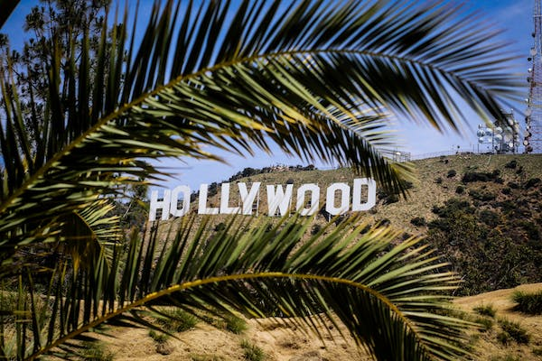
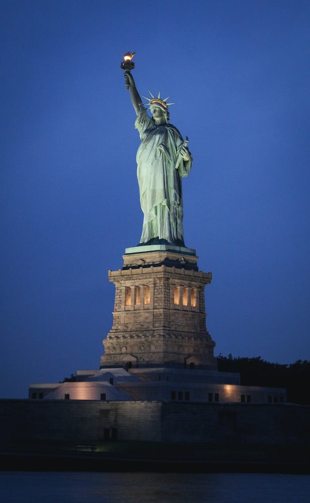

Welcome to Alberta Vacation Company...where dreams are made




Budget Vacation for a Memorable Experience
List of cities we currently operate
Vancouver
New York
California
Las Vegas
Vancouver is a top tourist destination in Canada. Vancouver is a major city in western Canada, located in the Lower Mainland region of British Columbia.Vancouver is home to many vibrant and interesting areas. Few places to start exploring are Chinatown and Coal Harbour;
New York City comprises 5 boroughs sitting where the Hudson River meets the Atlantic Ocean. At its core is Manhattan, a densely populated borough that's among the world's major commercial, financial and cultural centers. Its iconic sites include skyscrapers such as the Empire State Building and sprawling Central Park. Broadway theater is staged in neon-lit Times Square.New York City has been described as the cultural capital of the world. The culture of New York is reflected in its size and ethnic diversity. As many as 800 languages are spoken in New York, making it the most linguistically diverse city in the world. Many American cultural movements first emerged in the city.
California, a western U.S. state, stretches from the Mexican border along the Pacific for nearly 900 miles. Its terrain includes cliff-lined beaches, redwood forest, the Sierra Nevada Mountains, Central Valley farmland and the Mojave Desert. The city of Los Angeles is the seat of the Hollywood entertainment industry. Hilly San Francisco is known for the Golden Gate Bridge, Alcatraz Island and cable cars.The culture of California is tied to the culture of the United States as a whole. However, there are features that are unique to California. With roots in the cultures of Spain, Asia, Mexico, and the eastern United States, California integrates foods, languages and traditions from all over the world.
Las Vegas, often known simply as Vegas, is the 25th-most populous city in the United States, the most populous city in the state of Nevada, and the county seat of Clark County. The Las Vegas Valley metropolitan area is the largest within the greater Mojave Desert, and 2nd-largest in the Southwestern United States.Las Vegas has a reputation for being bright and glitter, full of colorful signs highlighting different attractions. A lot of this brightness comes from neon signs, which have been around since the first casino was established. Neon signs are as much a part of Vegas culture as gambling and glamour.